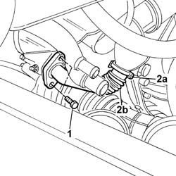
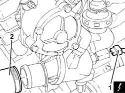
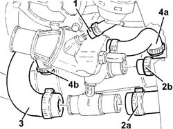
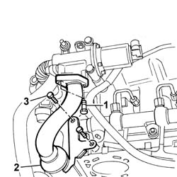
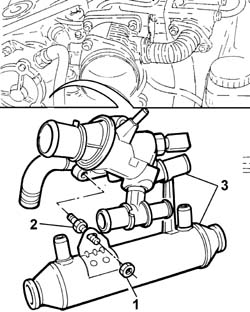

1088C30 thermostat unit - r+r
- Path
- Procedures > 10 ENGINE > 1088 ENGINE COOLING > 1088C water pump and thermostat > 1088C30 thermostat unit - r+r
- Kind
- repair procedure (removal / refitting; the operation number is the code)
- Applies to
- engines: 1.9 JTD 8V; all production periods
- Interactive page
- https://sloeber94.github.io/elrnDB-a147/en/#/3025076
Applies to: engines: 1.9 JTD 8V; all production periods
 Removing
Removing
 Refitting
RefittingPlace the car on a ramp.
1016A10 sound-proofing cover - r + r
Raise the lift.
5530B52 Battery DRIP TRAY/SUPPORT - R.R.
7055B54 under-engine guard - r r
1. Undo the upper and lower bolts securing the exhaust gas recirculation pipe to the exhaust manifold.
2. Acting on the band (2a), disconnect and remove the section (2b) of the exhaust gas recirculation pipe.

Applies to: engines: 1.9 JTD 8V; all production periods
Position a container suitable for collecting the engine coolant.
Disconnect the lower radiator hose and drain the engine coolant.
Remove the container used for collecting the coolant.
1. Disconnect the upper radiator pipe from the thermostat.
2. Disconnect the water temperature sensor electrical connection.
 | Name | Connector |
|---|---|---|
2 | Engine temperature sender unit |

Applies to: engines: 1.9 JTD 8V; all production periods
1. Disconnect the recirculation pipe (1a) to the reservoir and the two supply and return pipes (1b) and (2c) to the heater from the thermostat.
2. Disconnect the pipe from the thermostat and from the EGT exhaust gas supply pipe, then remove it.
3. Disconnect the supply pipe from the thermostat to the water pump rigid inlet pipe.
4. Disconnect the pipe (4a) and (4b) from the exhaust gas supply pipe.

Applies to: engines: 1.9 JTD 8V; all production periods
1. Undo the bolts fixing the exhaust gas supply pipe to the EGR solenoid valve.
2. Disconnect the pipe from the band for the centre section under the thermostat and remove the rear section of the EGR exhaust gas supply pipe.
3. Undo the bolts fixing the exhaust gas supply pipe mounting bracket to the cylinder head.

Applies to: engines: 1.9 JTD 8V; all production periods
1. Undo the nut fixing the exhaust gas supply pipe to the thermostat stud.
2. Undo the bolts fixing the thermostat to the cylinder head.
3. Remove the thermostat unit together with the centre section of the EGR exhaust gas supply pipe.

Applies to: engines: 1.9 JTD 8V; all production periods
Refitting
RemovingFit the thermostat / EGR exhaust gas supply pipe centre section assembly.
Tighten the bolts fixing the thermostat to torque.
 | Fastening | Component | Ø | Value (daNm) |
|---|---|---|---|---|
- | Bolt | THERMOSTAT | M8 | 2.1 ÷ 2.6 |
Tighten the nut fixing the exhaust gas supply pipe to the thermostat stud/bolt.
Tighten the bolts fixing the exhaust gas supply pipe to the cylinder head.
Fit the front and rear sections of the exhaust gas supply pipe to the centre section, securing them using the bands.
Tighten the bolts fixing the front section of the exhaust gas supply pipe to the exhaust manifold.
Tighten the bolts fixing the rear section of the exhaust gas supply pipe to the EGR valve.
Connect the electrical connection for the water temperature sensor.
| Name | Connector |
|---|---|---|
- | Engine temperature sender unit |
Connect the flexible rubber pipes disconnected from the thermostat.
5530B52 Battery DRIP TRAY/SUPPORT - R.R.
1016A10 sound-proofing cover - r + r
7055B54 under-engine guard - r r
Remove the vehicle from the ramp.
Topics linked from this page (6)
- 0010T20 coolant change
- 1016A10 sound-proofing cover - r + r
- 5530B10 battery - r+r
- 5530B52 Battery DRIP TRAY/SUPPORT - R.R.
- 7055B54 under-engine guard - r r
- K36 Engine temperature sender unit